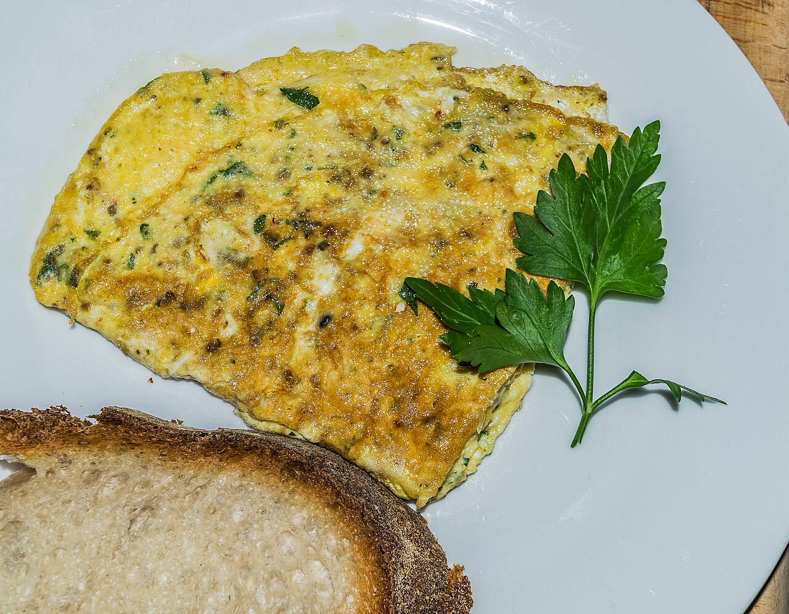

Учимся готовить простые блюда и понимать, как устроена кухня.
О мастерской
«Кулинарная мастерская» — учебная кухня, где мы самостоятельно готовим простые блюда и разбираемся, почему получается вкусно.
Занятия проходят небольшими группами: каждый ученик работает у своего рабочего места, взвешивает ингредиенты и пробует готовое блюдо.
Мастерская занимает две аудитории площадью около 40 м2, поэтому запись ведётся небольшими группами.
Поваром работает Ирина Соколова. Она объясняет, зачем нужны толстое дно сковороды и термометр: температура в °C меняет результат сильнее, чем кажется.
Простой рецепт: омлет с зеленью
Рецепт для первого занятия: он не требует трудных приёмов и сразу показывает, как работает нагрев. Слово омлет французское и означает «связанный в узел мешочек».
Ингредиенты
Яйца куриные — 2 штуки
Молоко — 50 мл
Укроп и петрушка — 1 пучок
Соль, перец и растительное масло
Шаги приготовления
Разбить яйца, добавить молоко, соль и перец.
Взбить смесь вилкой до однородной пены.
Разогреть сковороду с маслом на среднем огне.
Вылить смесь и готовить 3–4 минуты.
Готовый омлет подают сразу: свежая зелень в нём ароматнее, чем через час.
Заметка с фотографией блюда

На занятии ученики фотографируют готовое блюдо и добавляют снимок на страницу мастерской. Выше — фотография из Википедии: омлет с петрушкой и хлебом.
Пока изображение не закончилось, строки текста обтекают его справа, поэтому ширина абзаца здесь заметно меньше ширины заметки.
Подпись к фотографии: Krzysztof Golik, лицензия CC BY-SA 4.0. Абзац с классом after-image имеет clear: both и снова занимает всю ширину заметки.
Аудиофайл взят из интернета: это начало озвучки статьи Википедии «Spanish omelette» (испанский омлет) на английском языке, 30 секунд.
Текст аудио, перевод: «Испанский омлет, или испанская тортилья, — это омлет из яиц и картофеля, часто с добавлением лука. Его подают комнатной температуры как закуску (тапас). Это одно из самых популярных блюд испанской кухни».
Описание видео: фрагмент кулинарного ролика из Википедии (50 секунд, звук на английском языке с комментарием повара). В фрагменте показано приготовление яйца на сковороде с маслом: масло растапливается, на сковороду выливается яичная смесь. Видео сделано телеканалом Washington Square News, лицензия CC BY 3.0.
Запись на занятие
Форма записи осталась на отдельной странице: в ней имя участника, почта, количество порций, выбор блюда и пожелания повару.